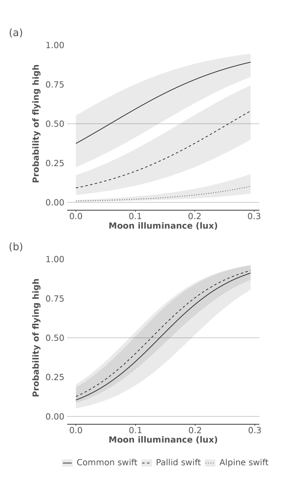

Brief overview of model analysis results, dynamically rendered as
website output using the open data. The full files are presented in the
analysis
folder.
Moonlight flight height responses
Multi-data logger results (Table 1)
# read the data
df <- readRDS(here::here("data/curated/data_MDL.rds"))
# fit the model
fm_lagged <- glmmTMB::glmmTMB(
altbin ~ moon_illuminance + lag_altitude + species + (1|species/tag),
data = df,
family = binomial
)
# report statistics of Table 1
print(summary(fm_lagged))## Family: binomial ( logit )
## Formula:
## altbin ~ moon_illuminance + lag_altitude + species + (1 | species/tag)
## Data: df
##
## AIC BIC logLik deviance df.resid
## 35953.3 36016.4 -17969.6 35939.3 60881
##
## Random effects:
##
## Conditional model:
## Groups Name Variance Std.Dev.
## tag:species (Intercept) 9.549e-01 0.9771959
## species (Intercept) 1.613e-07 0.0004016
## Number of obs: 60888, groups: tag:species, 23; species, 3
##
## Conditional model:
## Estimate Std. Error z value Pr(>|z|)
## (Intercept) -0.51356 0.36989 -1.39 0.16500
## moon_illuminance 8.90868 0.26969 33.03 < 2e-16 ***
## lag_altitude 1.97752 0.02047 96.59 < 2e-16 ***
## speciesapus_pallidus -1.77630 0.52346 -3.39 0.00069 ***
## speciestachymarptis_melba -4.27890 0.49564 -8.63 < 2e-16 ***
## ---
## Signif. codes: 0 '***' 0.001 '**' 0.01 '*' 0.05 '.' 0.1 ' ' 1GPS based results (Table 2)
# read the data
df <- readRDS(here::here("data/curated/data_GPS.rds"))
# fit the model
fm <- glmmTMB::glmmTMB(
altbin ~ moon_illuminance + species + (1|species/tag),
data = df,
family = binomial
)
# report the statistics of Table2
print(summary(fm))## Family: binomial ( logit )
## Formula: altbin ~ moon_illuminance + species + (1 | species/tag)
## Data: df
##
## AIC BIC logLik deviance df.resid
## 1631.0 1658.4 -810.5 1621.0 1775
##
## Random effects:
##
## Conditional model:
## Groups Name Variance Std.Dev.
## tag:species (Intercept) 3.357e-01 0.5793967
## species (Intercept) 8.335e-09 0.0000913
## Number of obs: 1780, groups: tag:species, 11; species, 2
##
## Conditional model:
## Estimate Std. Error z value Pr(>|z|)
## (Intercept) -2.1526 0.3992 -5.392 6.96e-08 ***
## moon_illuminance 15.3049 1.0566 14.485 < 2e-16 ***
## speciesapus_pallidus 0.2165 0.4509 0.480 0.631
## ---
## Signif. codes: 0 '***' 0.001 '**' 0.01 '*' 0.05 '.' 0.1 ' ' 1The above model responses are well captured visually in Figure 4 of the main manuscript, as shown below.

Figure 4. Marginal effect sizes by species for the generalised linear mixed effects logistic models relating moon luminance with flight height for both MDL, i.e. showing the probability of a high nighttime flight relative to daytime flight altitudes for MDL (a) and GPS (b). Grey 95% Confidence Intervals (CIs) were computed using a Wald z-distribution approximation and a standardised dataset.
Twilight dynamics
MDL based flight timing (Table 3)
# read the data
df <- readRDS(here::here("data/curated/data_twilight.rds"))
fm <- lme4::lmer(
twilight_timing ~ moon_illuminance + (1|species/tag),
data = df
)
# return twilight statistics
print(summary(fm))## Linear mixed model fit by REML ['lmerMod']
## Formula: twilight_timing ~ moon_illuminance + (1 | species/tag)
## Data: df
##
## REML criterion at convergence: 51826
##
## Scaled residuals:
## Min 1Q Median 3Q Max
## -3.0770 -0.6582 -0.0225 0.6765 4.0411
##
## Random effects:
## Groups Name Variance Std.Dev.
## tag:species (Intercept) 13.576 3.685
## species (Intercept) 2.056 1.434
## Residual 188.241 13.720
## Number of obs: 6410, groups: tag:species, 23; species, 3
##
## Fixed effects:
## Estimate Std. Error t value
## (Intercept) 8.558 1.150 7.44
## moon_illuminance 129.888 8.039 16.16
##
## Correlation of Fixed Effects:
## (Intr)
## moon_llmnnc -0.094